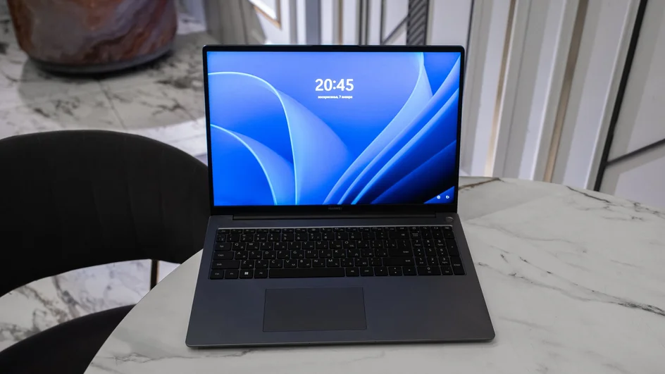
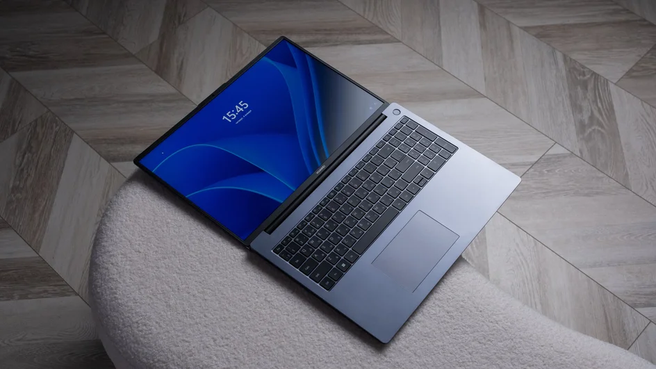

Вы этого не знали: 5 самых необычных функций вашего ноутбука
Скрытые возможности клавиатуры
Базовая составляющая любого ноутбука — клавиатура. Мы привыкли пользоваться ею каждый день для набора текста и быстрой активации стандартных команд — про то, к чему приводит одновременное нажатие Ctrl+Alt+Del, многие узнали еще на уроках информатики в школе. При этом знание о неочевидных сочетаниях клавиш может существенно упростить работу и повседневное использование ноутбука.
Наверняка у каждого была ситуация, когда вместо ненужной вкладки случайно закрывалась нужная. Можно залезть в историю браузера и снова открыть полезный сайт. Либо же нажать Ctrl+Shift+T — тогда вкладка мгновенно появится на своем месте. На рабочем месте или будучи дома с маленькими детьми пригодится сочетание Windows+L, чтобы заблокировать систему, а для входа понадобилось вводить пароль. Кроме этого, любую клавиатуру можно кастомизировать под свои нужды. Для этого зайдите в настройки и присвойте те дополнительные функции или макросы конкретным клавишам или сочетаниям, которые нужны именно вам.
Хорошая клавиатура — это не только функциональная, но и долговечная и комфортная для пользователя часть устройства. Так, клавиатура Huawei MateBook D 16 2024 имеет ход клавиш 1,5 мм, что приводит к более плавному нажатию. Отдельный цифровой блок и физические горячие клавиши обеспечивают комфортный ввод текста и широкий набор полезных функций, позволяя делать меньше движений при наборе.
Режимы работы
Режим энергосбережения известен многим, благодаря его популяризации на смартфонах. Когда предстоит долгий рабочий день вдали от кабинетов и розеток, чтобы сэкономить заряд батареи и точно все успеть, ноутбук также можно перевести в такой режим. Есть «спящий режим», который неплохо справляется с экономией энергии, но вот оставлять в нем устройство надолго специалисты не рекомендуют — это снижает срок службы SSD жесткого диска. Режимы фокусировки активируют таймер, чтобы не отвлекаться от выполнения задач.
Современные ноутбуки предлагают специальные высокопроизводительные режимы для работы с ресурсоемкими задачами и профессиональным ПО. Кроме этого есть и специальные игровые режимы для улучшения пользовательского опыта, например, в онлайн-играх. Обычно активировать особый режим можно либо в настройках устройства, либо самостоятельно отрегулировав степень производительности отдельных компонентов и функций, создав свой собственный «режим работы».
В Huawei MateBook D 16 2024 специальный производительный режим активируется клавишами Fn+P, либо в приложении. Благодаря процессору Intel Core i9−13900H 13-го поколения, двухканальной оперативной памяти и высокоскоростному SSD-накопителю ноутбук справляется с тяжелой работой в режиме многозадачности. Пользователь способен анализировать данные, писать код, работать сразу в нескольких приложениях без потери в плавности и скорости.
Разные рабочие столы
Удаленная работа превратила личные ноутбуки многих специалистов в рабочие — и наоборот. Чтобы не мешать вкладки с сериалами, музыкой и планированием путешествий и ссылки на корпоративный мессенджер, сервисы планирования и календари, первая мысль — использовать разные браузеры, либо разные окна одного браузера.
Это не всегда удобно, поэтому производители устройств разработали режимы многозадачности и виртуальные рабочие столы. Они независимы друг от друга, на них можно располагать разные папки, файлы и ярлыки, запускать разные приложения и вести совершенно параллельную деятельность. Очень часто переключение между ними занимает меньше секунды — лайфхак, если во время совещания в офисе вы решили почитать новости технологий на Hi-Tech Mail.ru, но начальник не вовремя начал обходить кабинет.
Huawei пошли дальше в оптимизации использования своих девайсов и представили концепцию Суперустройства. Ноутбук Huawei MateBook D 16 поддерживает быстрое подключение к другим устройствам Huawei поблизости. Когда наушники, смартфоны, планшеты, колонки и принтеры Huawei оказываются рядом с ноутбуком, он автоматически обнаруживает эти устройства. Подключившись через программу Huawei PC Manager с ноутбука, можно управлять приложениями смартфона, обрабатывать изображения, вводить объемный текст или редактировать его с помощью клавиатуры.
Вывод картинки на другие устройства
Чтобы создать собственный многофункциональный домашний офис или пространство для творчества и игр, необязательно иметь сразу несколько разных устройств. Достаточно нескольких экранов, которые можно разместить как угодно: например, повесить на стену или развернуть вертикально для более удобной работы с документами. Добиться эффектного сетапа поможет функция вывода изображения с экрана ноутбука — через провод, Bluetooth или отдельную кнопку «повтор экрана».
Оптимизировать работу с экранами можно, научившись «расширять» один рабочий стол сразу на несколько устройств. При активации этой функции и благодаря технологии Суперустройство ноутбук Huawei MateBook D 16 автоматически определит положение планшета Huawei, чтобы пользователь легко переходил от одного экрана к другому, независимо от их расположения. Используйте сразу несколько экранов для работы и творчества, а протокол Huawei Cast+ снижает уровень задержки и обеспечивает четкое изображение, наряду с плавной синхронизацией.
«Умные» инструменты для видеоконференций и офисной работы
Некоторые функции ноутбука способны улучшить качество видео- и аудиозвонков, совершаемых с девайса. Например, изменить настройки звука, чтобы собеседники слышали вас лучше, и наоборот. Современные устройства поддерживают системы пространственного звука. Изучить все функции можно в панели задач или специальной вкладке «Звук» в расширенных настройках ноутбука. Полезно знать и то, что вы сами можете регулировать интенсивность вывода звука в динамики ноутбука с разных сторон. Если вдруг правый отказывается работать прямо перед важным звонком, а наушников под рукой нет, перенаправьте вывод звука на левый динамик, чтобы расслышать всю информацию.
Бывают ситуации, когда хочется записать видеоконференцию, не используя для этого инструмент, встроенный в специальный сервис для звонков, который оповещает всех участников встречи о записи. Функция «ножниц» в ноутбуках позволяет не только делать скриншоты, но и записывать нужную область экрана или окна в браузере.
Ноутбук Huawei MateBook D 16 2024 предлагает сразу три режима шумоподавления для эффективной дистанционной работы за счет функции AI Sound. Технология усиливает голос говорящих людей, устраняя фоновые шумы, фильтрует посторонние голоса и обеспечивает естественную и четкую запись. Голосовые заметки можно записывать прямо в метро, кофейне или в парке. 16-дюймовый экран с соотношением сторон 16:10 имеет защиту от синего света, сертифицированную TÜV Rheinland, и поддерживает DC-затемнение. Это помогает защитить зрение и снизить усталость глаз даже после нескольких созвонов подряд.